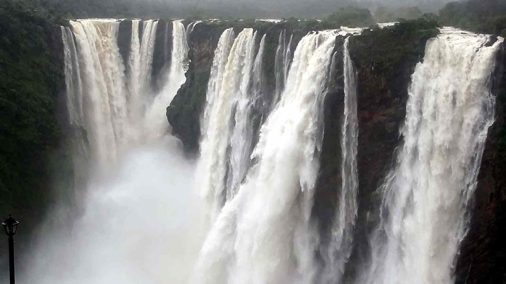

Explore Falls Nearby BENGALURU/Mysuru





Explore the Falls nearby SHIMOGA
Explore the Falls nearby CHIKMANALURU
Explore the Falls nearby HASSAN/Sakalespur
Explore the Falls nearby KODAGU
Explore the Falls nearby Uttara Kannada